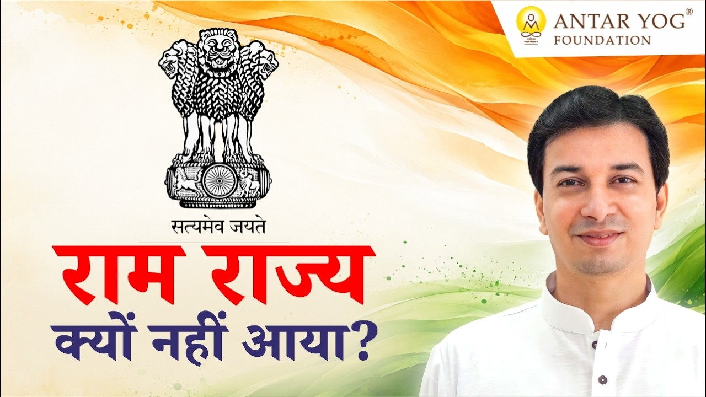

हम सब राम राज्य का सपना देखते हैं। पर क्या कभी सोचा है कि हमारे देश की शासन व्यवस्था उस सपने तक पहुंचने में सहायक है या बाधक?
इस प्रवचन में एक सीधा, चौंकाने वाला प्रश्न रखा गया है: क्या संघीय शासन (फेडरल गवर्नमेंट) से राम राज्य आ सकता है?
संघीय शासन आखिर है क्या?
हमारे देश में संघीय शासन है। इसका अर्थ है एक से अधिक सरकारों वाला देश: एक केंद्र सरकार और दूसरी राज्य सरकार।
जब सत्ता एक ही केंद्र में होती है, तो उसे एकात्मक व्यवस्था (Unitary System) कहते हैं।
आचार्य जी कहते हैं कि हम राम राज्य का सपना तो देख रहे हैं, पर यह फेडरल गवर्नमेंट से कभी हो ही नहीं सकता।
इतिहास के महान राज्य कैसे चलते थे?
श्री राम का राज्य पूर्णतः एकात्मक था। चंद्रगुप्त मौर्य का राज्य भी ऐसा ही था। छत्रपति शिवाजी महाराज के शासन को विदेशी यात्रियों ने भी केवल एकात्मक नहीं, बल्कि पूर्णतः एकात्मक बताया है।
इसका अर्थ है एक ही हाथ। वह हाथ जहां तक पहुंचे, वहां एक ही आवाज़ सुनी जाए।
संघीय शासन में इसकी कोई गारंटी नहीं। केंद्र कोई और चला सकता है, राज्य कोई और। जो दल केंद्र में विपक्ष है, वही किसी राज्य में शासन कर सकता है। तो क्या ऐसे देश ठीक चल पाएगा?
एक संस्था, अनेक शाखाएं
इसे एक सरल उदाहरण से समझिए। मान लीजिए अंतर योग फाउंडेशन का मुख्य कार्यालय मुंबई में है। वही इसकी "केंद्र सरकार" है। राजस्थान जैसे राज्यों में इसकी शाखाएं हैं, जो वहां की "राज्य सरकार" जैसी हैं।
गुरु हर जगह स्वयं नहीं बैठ सकते, पर उनका आदेश हर जगह जा सकता है। शाखा को वहीं का कोई प्रमुख, सचिव या अध्यक्ष चलाता है।
अब यदि मुख्यालय में पुरुष, प्रकृति और भगवान के व्यक्ति रूप जैसे तत्व सिखाए जा रहे हों, और राजस्थान की शाखा किसी दूसरी ही परंपरा की शिक्षा देने लगे, तो क्या होगा? तीसरी शाखा कहे कि हम अपने तरीके से सिखाएंगे?
स्वामी विवेकानंद जी की शाखाओं में एक जगह उनकी शिक्षा हो, दूसरी जगह किसी और धर्म की, तीसरी में कुछ और। क्या ऐसा चलेगा?
पिज़्ज़ा कंपनी में डोसा!
अध्यात्म छोड़िए, व्यापार की सोचिए। एक पिज़्ज़ा कंपनी है जिसकी अनेक शाखाएं हैं। एक में थालीपीठ बन रहा है, एक में डोसा, एक में पिज़्ज़ा।
मुख्यालय बेचारा कहता है, "पिज़्ज़ा बनाओ!" शाखा कहती है, "नहीं, हम विपक्ष में हैं, हम तो डोसा ही बेचेंगे।" बर्गर वाला कहता है, "मेरी कंपनी बर्गर की है!" और शाखा जवाब देती है, "नहीं, यहां वड़ा ही बिकेगा।"
आचार्य जी समझाते हैं कि अगर ऐसी दो सरकारों को स्वतंत्रता दे दी जाए जिनके विचार विरोधी हो सकते हैं, तो व्यवस्था चल ही नहीं सकती।
सोचिए, यदि आपके परिवार या संस्था में हर सदस्य अपनी अलग दिशा तय करे, तो वह कितनी दूर चल पाएगी?
तो राज्य सरकार किसलिए?
श्री राम भी अकेले हर राज्य में नहीं हो सकते थे। इसलिए हर स्थान पर उनका कोई मंत्री या सैनिक चाहिए था, जो उन्हीं के मत से शासन चलाए।
तो स्थानीय सरकार की भूमिका क्या है? जो शिक्षा मुंबई में दी गई, वही कोलकाता में होनी चाहिए। पर वहां का प्रमुख उसे बंगाली भाषा में सिखा सकता है, सेवा टीम में स्थानीय लोगों को प्राथमिकता दे सकता है, क्योंकि वह वहां के लोगों को बेहतर समझता है।
लेकिन क्या वह अपनी नई शिक्षा गढ़ सकता है? क्या वह मूल शिक्षा का विरोध कर सकता है? नहीं।
हमारी व्यवस्था की खिचड़ी
आज सरपंच के स्तर पर अलग लड़ाई है, महापौर के स्तर पर अलग, मुख्यमंत्री के स्तर पर अलग और देश के स्तर पर अलग। यहां का मित्र वहां का शत्रु, वहां का शत्रु यहां का मित्र।
सब कुछ एक खिचड़ी बनकर रह गया है। यही वह दोष है जहां हम चूक रहे हैं।
राम राज्य का सूत्र: शरणागति और स्थानीय सेवा
यदि राम राज्य लाना है, तो पूर्णतः एकात्मक व्यवस्था चाहिए। केंद्र में बैठे व्यक्ति की बात सब सुनें, जैसी कही गई वैसी, बिना ज़रा भी बदले। इतना शरणागत होना चाहिए।
यहां शरणागति (Surrender) का अर्थ है पूर्ण समर्पण: मार्गदर्शक की बात को बिना अपनी ओर से बदले स्वीकार करना।
और साथ ही, हर राज्य अपनी भाषा में, अपनी प्राथमिकता से अपने लोगों का उद्धार कर सकता है। उसकी पूरी अनुमति है।
क्या आप अपने जीवन में किसी मार्गदर्शन को बिना अपनी ओर से "संपादित" किए स्वीकार कर पाते हैं?
मुख्य बातें
- संघीय शासन का अर्थ है एक से अधिक सरकारें, जिनके विचार परस्पर विरोधी हो सकते हैं।
- श्री राम, चंद्रगुप्त मौर्य और छत्रपति शिवाजी महाराज का राज्य पूर्णतः एकात्मक था।
- संस्था और पिज़्ज़ा कंपनी के उदाहरण दिखाते हैं कि विरोधी शाखाएं मिलकर कुछ नहीं चला सकतीं।
- स्थानीय इकाई भाषा, सेवा और स्थानीय रोज़गार में स्वतंत्र हो सकती है, पर मूल शिक्षा में नहीं।
- राम राज्य का सूत्र: केंद्र के प्रति शरणागति और अपनी भाषा में अपने लोगों की सेवा।

आगे पढ़ें

अच्छे और बुरे नेता में क्या फर्क है? इसका उत्तर किसी बड़े ग्रंथ में नहीं, एक साधारण से अनुभव में छिपा है।

गुरुदेव के अनुसार भारत का भविष्य उज्ज्वल तो है, पर वह बहुत सारी कठिनाइयों से होकर आएगा। नया प्रशासन और नया भारत एक ही आधार पर खड़ा होगा: आध्यात्मिक…

गीता का एक श्लोक है जो पहली बार सुनने पर चौंका देता है। श्रीकृष्ण अर्जुन से कहते हैं, सब धर्म छोड़कर मेरी शरण में आ जा।